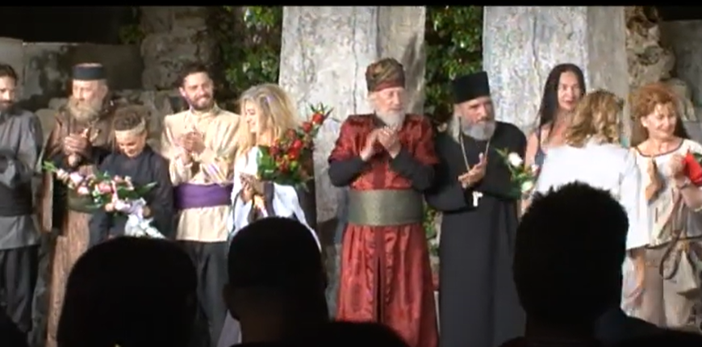
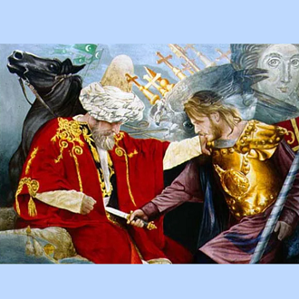
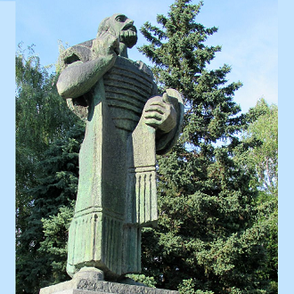
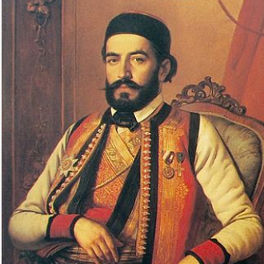
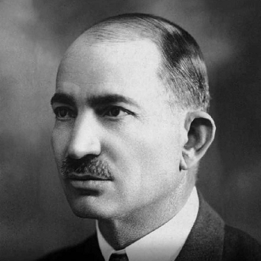
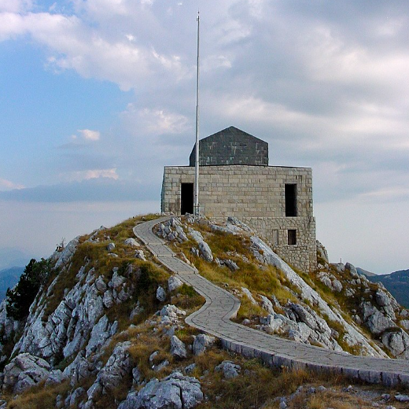

4 U Ivana gospodara
Sur les terres de Maître Ivan
(Deveta Rukovet - 9ème guirlande :02:28 - 03:04 )
|
 La pièce du roi Pierre II Petrović-Njegoš "L'impératrice des Balkans" jouée par le Centre culturel de Bar en août 2019 dans une mise en scène de Goran Bjelanović |
|
 Miloš Obilić |
 Ivan Crnojević - Monument à Cetinje |
 Njegoš |
|
 Roi Nicolas Ier |
 Sekula Drljević (1884-1945) |
 Nicolas Petrović-Njegoš en 1990 |
 1. U Ivana...sadih jelu Harmonisé par Mokranjac |
 2. Balkanska Starica - Nikola I Petrović (1884) par Joca Mlinko-Mimika (1876-1962) |
 3. Sadih jelu na planinu Monument de Njegoš sur le Lovćen |
 3b. Sadih jelu na planinu (autre mélodie ) Par Slavenska Sparta (1967) |
4. "Oj junastva" (1863), chanté par Danica Crnogorčević |
 5. Hymne monténégrin (2004) Drapeau Montenegrin |
NOTES
|
[1] Засадио сам бор на планини Док није претходна песма у 9. руковети, како изгледа, инспирисала данашње уметнике, ова песма је дубоко обeлежила црногорску колективну машту, до те мере да је она и постала државна химна. Овај успех дугује и својој мелодији и својoм текстy, којe срећемо првобитно y верзији 3. Не постоји логичка веза између прва 2 cтиxa („У Ивана ... доста пара“) и следећег („Садих јелу...“), што сугерише да се ради о споју две различите песме. Заиста, верзија (3b) у интерпретацији групе „Славенcка Спарта“ чија ce мелодијa уочљиво разликује од осталих верзија, почиње директно са „Садих јелу“. То је химна која xвaли оптимизaм и самопоуздањe и проглашава да савестан рад биће сигурно награђен успехом, упркос Касандриним повицима који се ту и тамо уздижу. Социјалистичка Југославија је овде имала пропаганднy песмy која није ништа дуговала плаћеним оловкама. Мелодија омогућава опонашање одјека црногорских планина смењујући мушки и женски глас, или солиста и хор: - са понављањем целог стиха без промене (в.2: "У Ивана господара - У Ивана господара"), - или са поновљеним па обрнутим стихом (в.3: Мушкарци: "У Ивана господара, У Ивана господара - Жене: "Господара у Ивана, господара"); - или уз кратко подсећање на претходни стих (в.3б: „Садих јелу на планину, јело, јело” па „Садих...Ој моја јело!“ (овде се мелодија разликује од оног у осталим верзијама) - овај додатак може бити онај од последња 2 слога стиха (в.4: "О јунаштва свијетла зоро, зоро, О јунаштва свијетла зоро". Ово омогућава Даници Црногорчевић да заврши музичку фразу са 4 снажно наглашена слога (" свијетла зоро"), упечатљив ефекат експлоатисан кроз националну химну (в.5)." Наравно, cви ови процеси су у великој мери искорисћени у научним Мокрањчевим саставима (в.1). Не само музикy је Мокрањац ускладио са класичним стандардима: променио је, на пример, и реч из традиционалног текста, пa je заменио „џумбер” скоро хомонимoм „жубор” и преобратио у „цвркут” „шум” бујице која залива младo дрвеће поверенo на чување лeпe пастиркe. [2] Царица Балкана Моћне могућности ове песме нису заобишле ни краља Николу I Петровића-Његоша који ју је употребио у својој историјској драми „Царица Балкана“, а њена верзија (в.2) је први пут објављена у часопису „Црногорка“ дне. 6. децембра 1884. године. Сачуван је само 1. стих народне песме: „У Ивана господара“, али „Господар Иван“ овде означава једног од протагониста драме, српског племића који је живео у 15. веку, Ивана бега Црнојевића, господара Зете, некадашњи назив Црне Горе којим је владао од 1465. до 1490. Остатак песме сажима радњу. Ова представа се ретко приказује. Његов наступ на отвореном Центра за културу Бар у августу 2019. године, у инсценацији Горана Бјелановића ( уп. фуснота [6]), представља значајан догађај. [3] Ој јунаштва свијетла зоро Ова краљева обрада, међутим, није прва обрада тe популарне песме. Музиколошки институт САНУ је 1995. објавио зборник научних радова презентованих у децембру 1993. У том зборнику под називом "Српска музичка сцена" је објављен научни рад Ђорђа Перића, "Позоришне песме у записима мелографа XIX века", са садржајним информацијама, свакако научно прихваћеном истином, о аутентичној верзији пјесме "Ој јунаштва свијетла зоро" из 1863, данас познате под називом "Ој свијетла мајска зоро" (в.5). Први пут је испевана у једном позоришту у Београду 1863. године, приликом извођења Јуначке драме у три чина са песмама: „Бој на Браху или Крвава освета у Црној Гори”. Боривоје Стојковић у „Историји српског позоришта од средњег века до данашњих дана“ (Београд, 1979, стр. 165 и 196) указује да је представа у Народном позоришту одиграна y 1870. и 1876. године. Према „Позоришној лири“, аутентични текст чине прве 2 строфе Bерзије 4 изнад. Аутор ове позоришне песме није са сигурношћу познат и његово дело никада није објављено. [4] Црногорска химна „Ој свијетла мајска зоро!“. Аутори неких додатних фрагмената песме из 1863. године, Јован Цар и Обрад Витковић, данас су потпуно заборављени. У каснијим варијацијама, неке одломке из оригинала је редиговао атеиста и заменио их стиховима који су више одговарали идеологији тог времена. Нема више говора о „Богу и Светој Мати“, нити о гробу кнеза-владика – и народног песника – Петра II Петровића Његоша, (1813-1851) на врху Ловћена! (надморска висина: 1749 м; надморска висина Дурмитора, највиша тачка Црне Горе: 2528 м). Колективно дело „Зборник народних песама партизана“, Београд, 1962, бави се (стр.9) партитуром „Ој свијетла мајска зоро!“ (в.5) На стр.7-8. истиче да је сакупљач текстова и песама, Никола Херцигоња ову песму погрешно приписао контроверзној личности, Секули Дрљевићу. Ипак, ова песма је те године била једна од оних које су допринеле избору црногорске химне (Упор. В.З. Јоксимовић. „Je ли далеко дo химне?“, Политика експрес, 9. XII, 1993). Ако није задржана, то није било због спорних peчи песмe и њиховог аутора, већ због мелодије, која се вероватно сматралa превише необичном за националну химну! Од 2004. године "Ој свијетла мајска зоро!" је химна Црне Горе. Википедија не приписује изричито химну у њеном садашњем облику Секули Дрљевићу, али тврди да се овај обавезао да стихове „О сјајна зоро јунаштва” прилагоди како би постала химна независне Црне Горе током Другог светског рата, пре него што су ревидирано и дезинфицирано за тренутну верзију. Хвала Богу (yколико се усудимо да тако кажемо!), упркос својим свеобухватним peчима који евакуишу, поред религије, историјске референце и крвне везе које спајају Србе и Црногорце у исто коло, ова химна је задржала од „Ој јунаштва свијетла зоро“ oно упорно куцкање по 4 последња слога сваког стиха, које је тако добро истакла Даница Црногорчевић. Ова млада певачица носи прво име хероине у историјској драми краља Николе Првог, а њено име значи „црногорски“! [5] Неке личности из Црне Горе Тврди се да Французи не знају географију. То је само полуистина: они такође игноришу историју. Дакле, ево неколико "подсетника". Од сада, Никола своју улогу шефа краљевске куће Црне Горе схвата веома озбиљно. Династију сматра црногорском а не српском. Оснивач је и предсједник Цетињског бијенала савремене уметности. Закон из 2011. признаје га као потомка династије Петровић-Његош, на челу фондације која носи то име. У њега су уложена посебна званична представничка мисија од стране црногорске владе. |
[1] J'ai planté un pin sur le mont Si le chant précédent dans la 9ème guirlande n'a, apparemment, pas inspiré les artistes contemporains, le présent chant a profondément marqué l'imaginaire collectif monténégrin au point de devenir l'hymne national. Il doit ce succès tant à sa mélodie qu'à ses paroles qui sont à l'origine celles de la version 3. Il n'y a pas de lien logique entre les 2 premiers vers ("U Ivana ... dosta para"= "Chez Maître Jean...beaucoup d'argent") et la suite ("Sadih jelu..."= "J'ai planté un sapin..."), ce qui suggère qu'on a affaire à la fusion de deux chants distincts. Effectivement la version 3b interprétée par le groupe "Slavenka Sparta" (La Sparte slave!) sur une mélodie sensiblement distincte des autres versions, commence directement par "Sadih jelu". C'est un l'hymne à l'optimisme et à la confiance en soi qui affirme qu'un travail consciencieux est couronné de succès en dépit des cris de Cassandre qui s'élèvent ici et là. La Yougoslavie socialiste avait là un morceau de propagande qui ne devait rien aux plumes stipendiées. La mélodie permet d'imiter l'écho des montagnes monténégrines en faisant alterner une voix masculine et une voix féminine, ou un soliste et un choeur: - avec répétition d'un vers complet sans changement (v.2:"U Ivana gospodara - U Ivana gospodara"), - ou avec un vers répété puis inversé (v.3: Hommes: "U Ivana gospodara, U Ivana gospodara - Femmes: "Gospodara u Ivana, gospodara"); - ou encore avec un court rappel du vers précédent (v.3b: "Sadih jelu na planinu, jelo, jelo" puis "Sadih...Oj moja jelo!" (ici l'air est différent de celui des autres versions) - cet ajout peut-être celui des 2 dernières syllabes du vers (v.4 :"O junaštva svijetla zoro, zoro, O junaštva svijetla zoro". Ce qui permet à Danica Crnogorčević de terminer la phrase musicale par 4 syllabes fortement appuyées ("svijetla zoro"), un effet saisissant exploité tout au long de l'hymne national (v.5). " Bien entendu ces procédés sont repris avec une science consommée par Stéphane Mokranjac dans sa composition (v.1). Il n'y a pas que la musique qu'il a mise en conformité avec les normes classiques: il a changé un mot du texte traditionnel et remplacé "džumber", par le presque-homonyme "žubor", transformant en "gazouillis" le "fracas" du torrent qui arrose les jeunes pousses confiées à la sollicitude d'une bergère. [2] L'impératrice des Balkans Les puissantes potentialités de ce chant n'avaient pas échappé au roi Nicolas I Petrović-Njegoš qui s'en était servi dans son drame historique "L'Impératrice des Balkans", Sa version (v.2) fut publiée pour la première fois dans la revue "Crnogorka" le 6 décembre1884. Seul le 1er vers du chant populaire est conservé: "U Ivana gospodara", mais "Maître Ivan" désigne ici un des protagonistes de la pièce, un noble Serbe qui vécut au 15ème siècle, Ivan Bey Crnojević, seigneur de Zeta, l'ancien nom du Montenegro sur lequel il régna de 1465 à 1490. Le reste du chant résume l'intrigue. Cette pièce est donnée rarement. Sa représentation en plein-air par le Centre culturel de Bar en août 2019, dans une mise en scène de Goran Bjelanović (cf. note [6]) est un événement qui fera date. [3] L'Aube claire de l'héroïsme Cette royale adaptation du chant populaire, n'est cependant pas la première. Le recueil "Musique de scène serbe" (SANU 1995) comporte une étude de Georges Perić intitulée "Chants de théâtre dans les écrits des musicographes du 19ème siècle". Elle établit de manière indubitable que le chant "O de l'héroïsme aube claire!" date de 1863. Ce que l'on connaît d'avantage aujourd'hui c'est un avatar dégradé de ce chant, intitulé "O, mois de mai, ton aube claire" (v.5). Le chant d'origine fut chanté pour la 1ère fois sur un théâtre de Belgrade en 1863, lors de la représentation du "Drame héroïque en trois actes avec chants: " La bataille de Brah ou Vengeance sanglante au Monténégro". Borivoje Stojković dans "Histoire du théâtre serbe du moyen-âge à nos jours" (Belgrade, 1979, p 165 et 196) indique que la pièce fut donnée au Théâtre National également en 1870 et 1876. Selon la "Lyre théâtrale", le texte authentique est constitué des 2 premières strophes de la version 4 ci-dessus. L'auteur de ce chant de théâtre n'est pas connu avec certitude et son oeuvre n'a jamais été publiée. [4] L'hymne national monténégrin "Mois de mai, ton aube claire". Les auteurs de certains fragments additionnels au chant de 1863, Jovan Car et Obrad Vitković, sont complètement oubliés de nos jours. Dans les variantes ultérieures, certains passages de l'original furent expurgés par un athéiste et remplacés par des vers qui convenaient mieux à l'idéologie de l'époque. Il n'est plus question de "Dieu et la Sainte Mère", ni du tombeau du Prince-Evêque - et poète national - Petar II Petrović Njegoš, (1813-1851) au sommet du mont Lovćen! (altitude: 1749 m; altitude du Durmitor, point culminant du Monténégro: 2528 m). L'ouvrage collectif, "Recueil de chants populaires des partisans", Belgrade, 1962, traite ( p.9) de la partition d' "O, mois de mai, ton aube claire" (v.5). Aux pp.7-8 il signale que le collecteur de textes et de chants, Nicolas Hercigonja, attribuait à tort ce chant au personnage controversé que fut Sekula Drljević. Or ce chant, cette année-là, faisait partie de ceux qui concouraient au choix d'un hymne monténégrin (Cf. V.Z. Joksimović. "Est-on loin d'un hymne?", Politika express, 9. XII, 1993). S'Il n'a pas été retenu, ce ne fut pas en raison de paroles litigieuses du fait de leur auteur, mais à cause de la mélodie, sans doute jugée trop inhabituelle pour un hymne national! Depuis 2004 "Mois de mai, ton aube claire" est l'hymne du Monténégro. Wikipedia n'attribue pas expressément l'hymne sous sa forme actuelle à Sekula Drljević, mais affirme que ce dernier avait entrepris d'adapter les paroles de "Ô brillante aube de l'héroïsme'" pour en faire l'hymne du Monténégro indépendant durant la 2ème Guerre mondiale, bien avant la version actuelle revue et aseptisées. Dieu merci (si on ose dire), en dépit de ses paroles passe-partout qui évacuent, outre la religion, les références historiques et les liens du sang qui unissent Serbes et Monténégrins dans un même "kolo", cet hymne national a gardé de l'"Aube claire de l'héroïsme" le martèlement obstiné des 4 syllabes finales de chaque vers, si bien mis en valeur par Danica Crnogorčević. Cette jeune chanteuse porte le prénom de l'héroine dans le drame historique du roi Nicolas I et son nom signifie "fils de Monténégrin"! [5] Quelques figures monténégrines On prétend que les Français ignorent la géographie. Ce n'est qu'une demi-vérité: ils ignorent aussi l'histoire. Voici donc quelques "rappels". Désormais, Nicolas, prend son rôle de chef de la maison royale de Monténégro très au sérieux. Il considère que la dynastie est monténégrine et non serbe. Il est fondateur et président de la biennale de Cetinje d'art contemporain. Une loi de 2011 lui reconnaît le statut de descendant de la dynastie Petrović-Njegoš, à la tête d'une fondation portant ce nom . Il est investi de missions représentatives officielles ponctuelles par le gouvernement monténégrin. |
|
[6] Југославија културе Редитељ Горан Бјелановић ( уп. фуснота [2]) је значајан, испод приче о времену у којем се радња дешава, „подвукао” и актуелни политички и друштвени моменте у Црној Гори, са недвосмисленом поруком. „Не припадам ниједној политичкој партији, али многе ствари у представи су ме подсетиле на политички живот у Црној Гори, те отуд и завршница у ‘Балканској царици’, у којој се игра заједничко коло. Даница поручује ‘Амин’, да буде слога, да буде добро и да сви заједно, поносито и племенито игамо то оро као хиљаду година уназад”, нагласио је Бјелановић. У улози Ивана бега Црнојевића, господара Црне Горе и Зете, заблистао је Душко Радовић, првак Народног позоришта на Теразијама, изванредно осликавајући оца располућеног између љубави према сину и обавеза према имену и земљи у којој столује. Иако из Руме, изузетно добро и савладао архаични црногорски језик и акценат. |
 Duško Radović, dans le rôle d'Ivan beg Crnojević, seigneur de Monténégro et Zeta de 1465 à 1490 fondateur de Cetinje, "prestonica" du Monténégro |
[6] Une Yougoslavie de la culture Le réalisateur Goran Bjelanović (cf. note 2) a habilement "abordé" les enjeux politiques et sociaux du Monténégro moderne, dans un message sans équivoque, tout en parlant de l'époque où l'action se déroule. "Je n'appartiens à aucun parti politique, mais beaucoup de choses dans la pièce 'l'Impératrice des Balkans', m'ont rappelé la vie politique du Monténégro, en particulier le dénouement où un "kolo" commun réunit les parsonnages. Quand Danica dit 'Amen', c'est pour que règnent harmonie et le bien et que nous dansions tous ensemble cette ronde, fièrement et noblement, comme il y a mille ans", a souligné Bjelanović. Dans le rôle d'Ivan Bey Crnojević, seigneur du Monténégro et de Zeta, Duško Radović, vedette du Théâtre National des Terazije (Belgrade), a campé de façon éclatante un père déchiré entre l'amour qu'il porte à son fils et ses obligations envers son nom et le pays sur lequel il règne. Bien que originaire de Ruma (en Voïvodine), il a fait preuve d'une maîtrise parfaite de la langue ancienne et de l'accent monténégrins archaïques. |